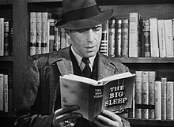
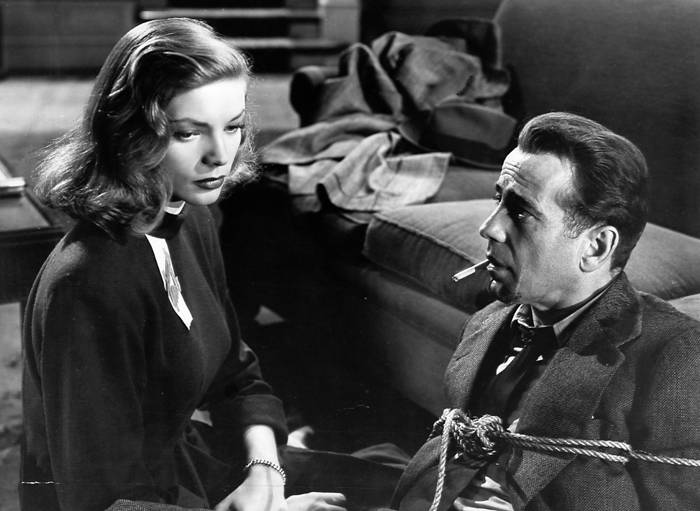

Welcome to the mystery page, enjoy from the movies
The weekly movie: The Big Sleep
skip the plot and go watch the trailerThe plot:
Los Angeles private detective Philip Marlowe is summoned to the mansion of General Sternwood, who wants to resolve "gambling debts" his daughter Carmen owes to bookseller Arthur Geiger. As Marlowe leaves, Sternwood's older daughter Vivian stops him. She suspects her father's true motive for hiring a detective is to find his protégé Sean Regan who disappeared a month earlier. Marlowe goes to Geiger's shop, which is minded by Agnes Louzier, and then follows Geiger home. Hearing a gunshot and a woman's scream, he breaks in to find Geiger's body and a drugged Carmen, as well as a hidden camera empty of film. After taking Carmen home, he returns and discovers that the body has disappeared. During the night, Marlowe learns that Sternwood's driver, Owen Taylor, has been found dead in a limo floating off the Lido Pier, having been struck on the back of the head. Vivian comes to Marlowe's office the next morning with scandalous pictures of Carmen that she received with a blackmail demand for the negatives. Marlowe returns to Geiger's bookstore and follows a car to the apartment of Joe Brody, a gambler who previously blackmailed General Sternwood. He then finds Carmen in Geiger's house, where she insists that it was Brody who killed Geiger. They are interrupted by the landlord, gangster Eddie Mars. Marlowe goes to Brody's apartment, where he finds Agnes and Vivian. They are interrupted by Carmen, who wants her photos. Marlowe disarms her and sends Vivian and Carmen home. Brody admits he was behind the blackmailing, having stolen the negatives from Taylor, but then has to answer the door and is shot. Marlowe chases the killer and apprehends Carol Lundgren, Geiger's former driver, who believes Brody is swindling him. Marlowe calls the police to arrest Lundgren. Marlowe visits Mars' casino where he asks about Regan, who supposedly ran off with Mars' wife. Mars is evasive and tells Marlowe that Vivian is running up gambling debts. Vivian wins a big wager and then wants Marlowe to take her home. A stooge of Mars' attempts to rob Vivian but Marlowe knocks him out. While driving back, Marlowe presses Vivian on her connection with Mars but she admits nothing. Back at home, Marlowe finds a flirtatious Carmen waiting for him. She says she did not like Regan and mentions that Mars calls Vivian frequently. When she attempts to seduce Marlowe, he throws her out. The next day, Vivian tells him he can stop looking for Regan; he has been found in Mexico and she is going to see him.
Mars has Marlowe beaten up to stop him investigating further. He is found by Harry Jones: an associate of Agnes and besotted with her. Jones conveys her offer to reveal Mars' wife's location for $200. When Marlowe goes to meet him and be taken to her hiding place, he spots Canino, a gunman hired by Mars, who is there to find Agnes. As Marlowe watches from hiding, Canino threatens Jones until Jones tells him Agnes's location. Canino then forces Jones to have a "drink" which turns out to be poison. Afterward, Marlowe discovers that Jones lied about Agnes's location.Agnes telephones the office while Marlowe is still there and he arranges to meet her. She has seen Mona Mars behind an auto repair shop near a town called Realito. When he arrives, Marlowe is attacked by Canino. He awakes tied up, with Mona watching over him. Vivian is there too and frees Marlowe, allowing him to get his gun and kill Canino. They drive back together and Marlowe calls Mars from Geiger's house, pretending to be still in Realito. Mars arrives with four men, who set up an ambush outside. When Mars enters, surprised to see Marlowe, Marlowe says Mars has been blackmailing Vivian, as Carmen had killed Regan; Mars claims she did this in a mental haze, though Marlowe doubts Mars' credibility. He then forces Mars outside, where he is shot by his own men. Marlowe calls the police, telling them that Mars killed Regan, which may be the truth. He also convinces Vivian that her sister needs psychiatric care, and Vivian says to Marlowe of her own problems that there's "Nothing you can't fix."
The trailer for the movie "The Big Sleep":
back to home page